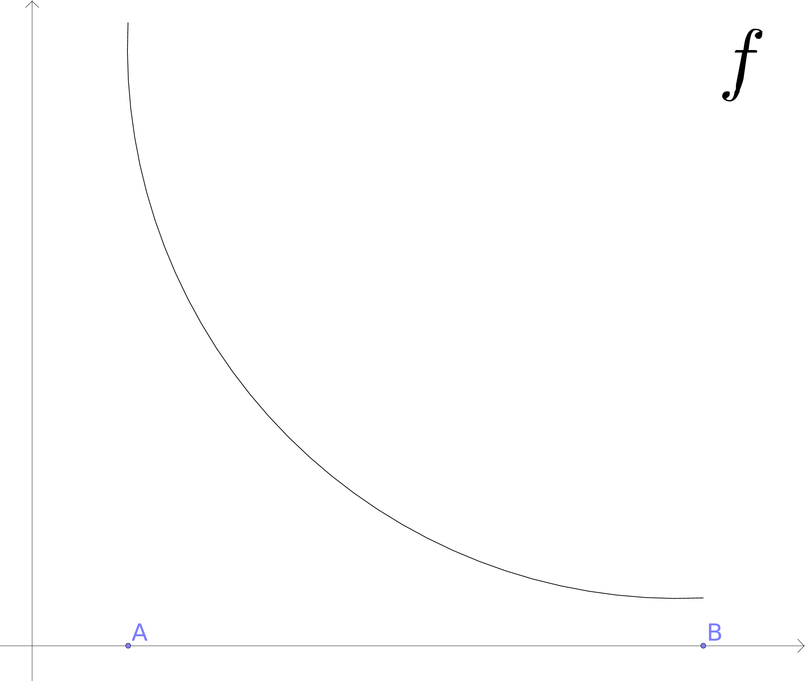
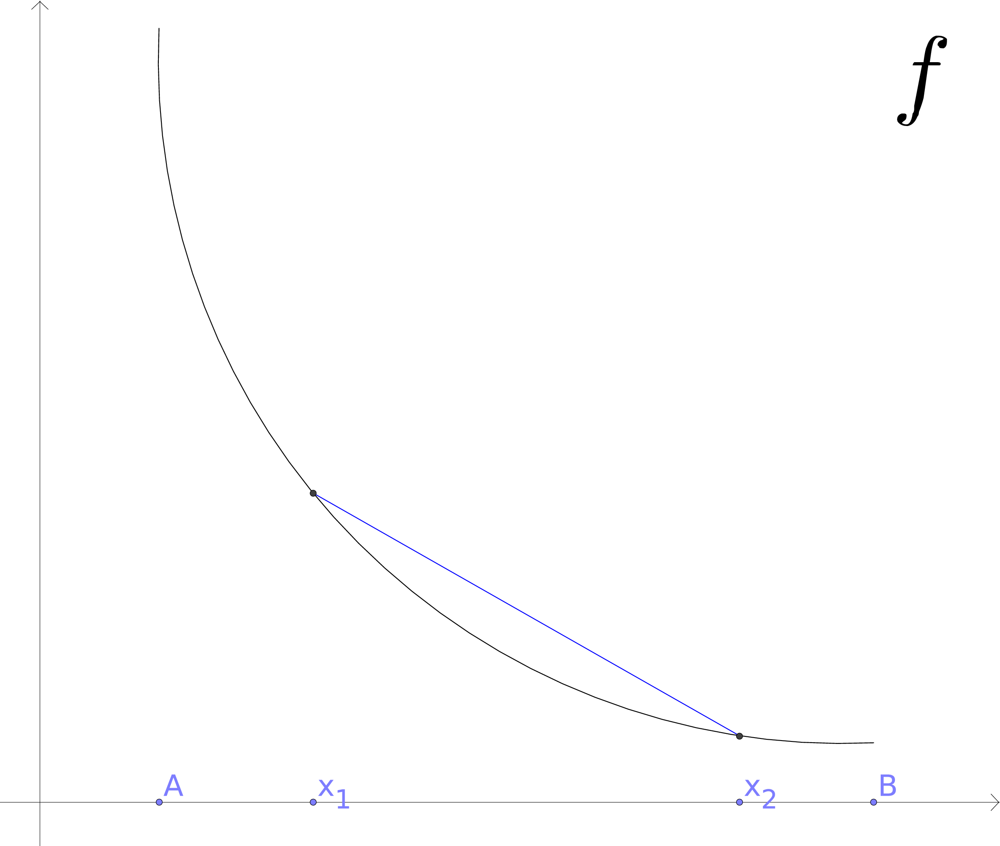
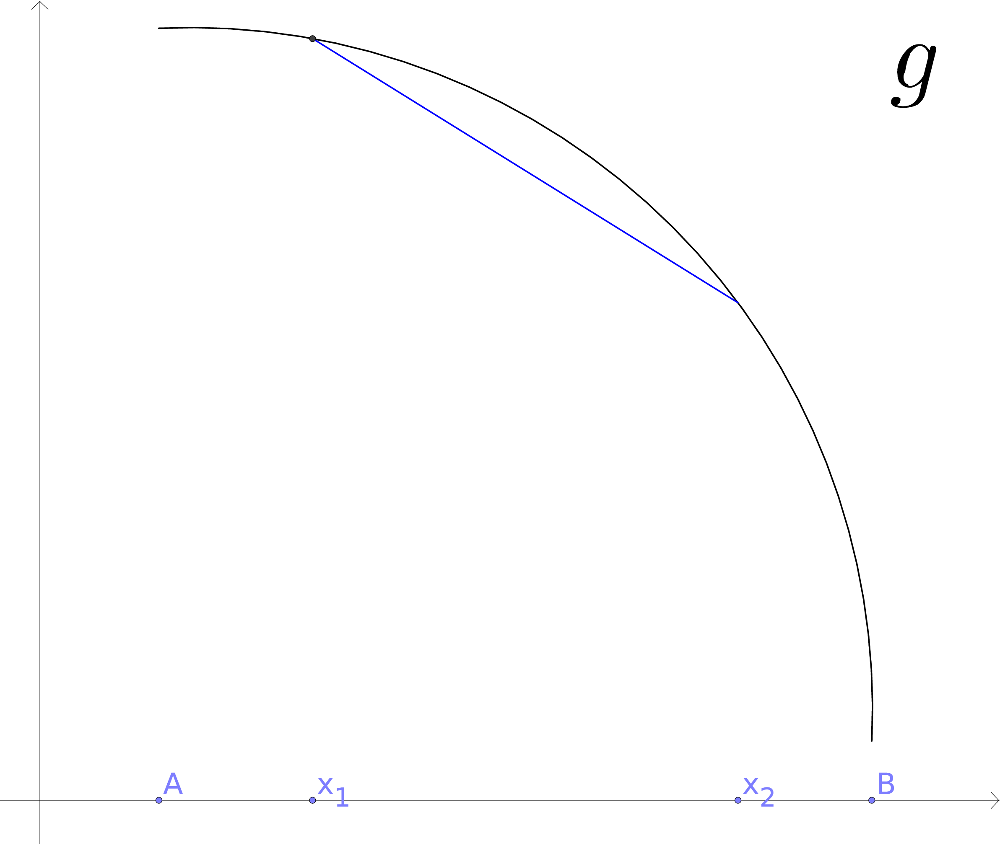
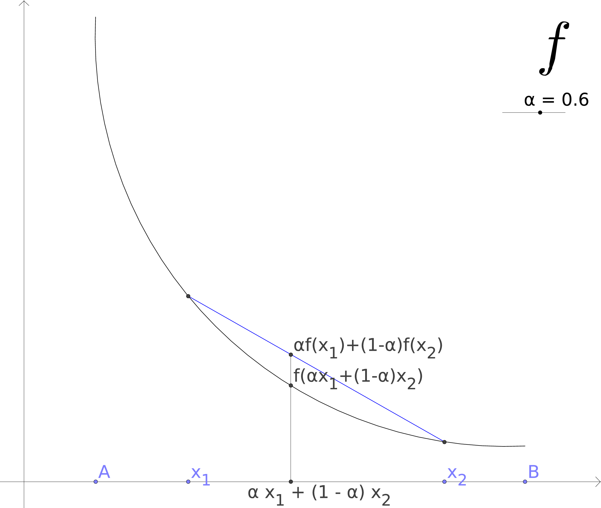
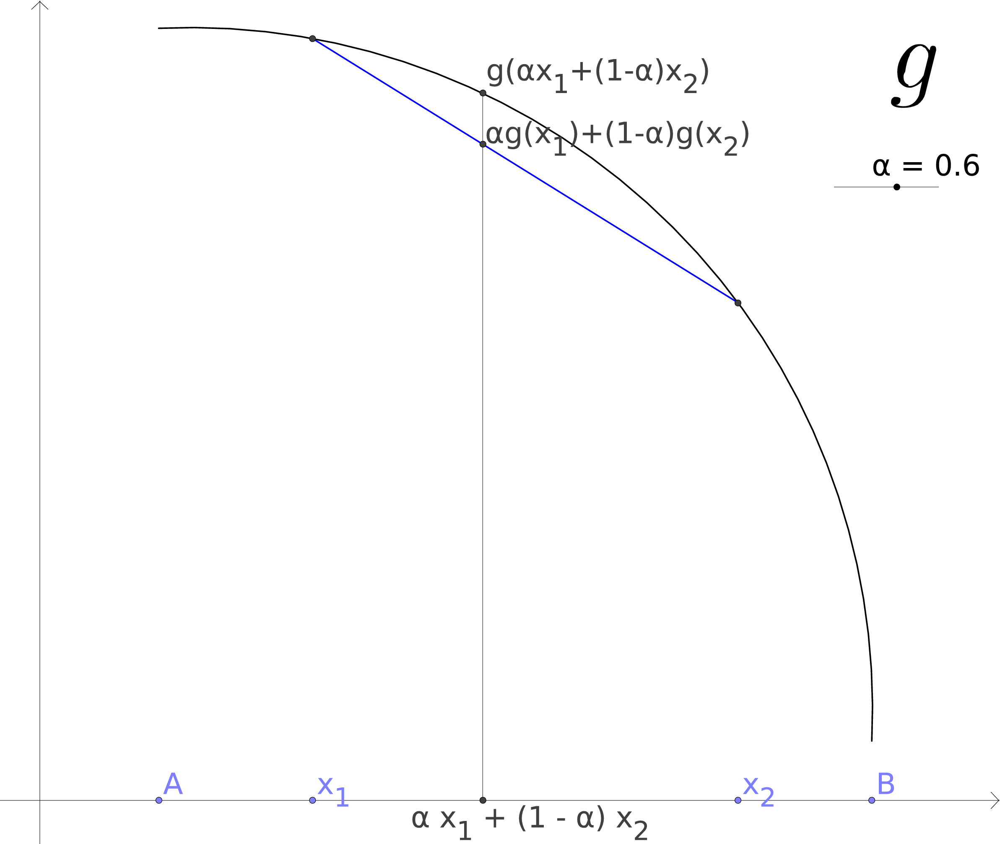
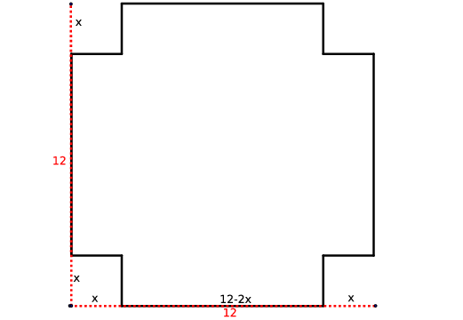

5. Könnun falla¶
Verkefnalisti
stækka letur/ása á myndum?
5.1. Inngangur¶
Aðvörun
Frávik frá bókinni
Það sem á eftir kemur er eitt af fáum atriðum þar sem mín nálgun og skilgreiningar eru frábrugðnar þeim í bókinni.
5.1.1. Hver er munurinn?¶
|  | 
|
Skoðum föllin tvö að ofan, þau eru augljóslega ekki eins, þannig að spurningin er hvernig getum við lýst því muninum á þeim?
Þau hugtök sem við höfum skoðað hingað til geta ekki greint á milli þessara falla:
- Þau hafa sama skilgreiningarmengið \([A,B]\)
- Þau taka sömu gildin í endapunktunum
- Þau hafa bæði hágildi í \(A\) og lággildi í \(B\)
- Þau eru bæði minnkandi (neikvæð afleiða)
5.1.2. Drögum sniðil¶
|  |  |
Ef við veljum nú tvo punkta á \([A,B]\) af handahófi, köllum þá \(x_1\) og \(x_2\), og drögum línu (sniðil) í gegnum punktana á grafum \(f\) og \(g\) þá sjáum við að sniðillinn lendir fyrir neðan \(g\) en ofan \(f\).
Sérhvern punkt á milli \(x_1\) og \(x_2\), getum við skrifað \(\alpha x_1 + (1-\alpha)x_2\), \(\alpha \in [0,1]\). Þá er \(y\)-hnit punktsins á sniðlinum með þetta \(x\)-hnit gefið með
á fyrri myndinni og
á myndinni fyrir \(g\).
Ef \(f\) liggur fyrir neðan sniðilinn þá þýðir það að fallgildi \(f\) í punktunum \(\alpha x_1 + (1-\alpha)x_2\) liggur fyrir neðan punktinum á sniðlinum, það er
Eins, ef \(g\) liggur fyrir ofan sniðilinn þá gildir að
|  |  |
5.2. Kúpni¶
5.2.1. Skilgreining¶
Látum \(f:[a, b]\rightarrow {\mathbb R}\) vera fall.
Segjum að fallið \(f\) sé kúpt (e. convex, concave up) ef um alla punkta \(x_1, x_2\in [a, b]\) og sérhverja tölu \(0\leq \alpha\leq 1\) gildir að
\[f(\alpha x_1+(1-\alpha)x_2)\leq \alpha f(x_1)+(1-\alpha)f(x_2).\]Segjum að fallið \(f\) sé hvelft (e. concave, concave down) ef um alla punkta \(x_1, x_2\in [a, b]\) og sérhverja tölu \(0\leq \alpha\leq 1\) gildir að
\[f(\alpha x_1+(1-\alpha)x_2)\geq \alpha f(x_1)+(1-\alpha)f(x_2).\]
Athugasemd
Hér erum við komin með hugtak sem getur útskýrt muninn á myndunum í byrjun kaflans, \(f\) er kúpt og \(g\) er hvelft.
5.3. Auðkenning á kúpni með afleiðum¶
|
|
5.3.1. Athugasemd¶
Ef við skoðum afleiður fallanna \(f\) og \(g\) betur þá sjáum við að:
- Afleiða \(f\) er mjög neikvæð nálægt \(A\) og nálgast svo 0 í \(B\), það er afleiðan er vaxandi.
- Afleiða \(g\) er u.þ.b. 0 í \(A\) og minnkar svo þegar við nálgumst \(B\), það er afleiðan er minnkandi.
Með öðrum orðum
5.3.2. Setning¶
Fyrir tvídiffranlegt fall \(f\) þá er eftirfarandi jafngilt
- \(f\) er kúpt
- \(f'\) er vaxandi
- \(f'' \geq 0\)
5.3.3. Setning¶
Fyrir tvídiffranlegt fall \(g\) þá er eftirfarandi jafngilt
- \(g\) er hvelft
- \(g'\) er minnkandi
- \(g'' \leq 0\)
Aðvörun
Hvort fall er kúpt eða hvelft er algjörlega óháð því hvort það er vaxandi eða minnkandi. Til dæmis er \(f(x) = x^2\) kúpt en það er vaxandi þegar \(x>0\) og minnkandi þegar \(x<0\).
Aðvörun
Fall þarf eru ekki alltaf annað hvort kúpt eða hvelft alls staðar. Alveg eins og það eru til föll sem eru sums staðar vaxandi og sums staðar minnkandi, þá eru mörg föll sums staðar kúpt og sums staðar hveld, til dæmis hornaföllin.
5.4. Beygjuskilapunktar¶
5.4.1. Skilgreining¶
Punktur \((x_0, f(x_0))\) er sagður vera beygjuskilapunktur (e. inflection point) grafsins \(y=f(x)\) ef
- grafið hefur snertilínu í \(x_0\), og
- grafið er kúpt öðru megin við \(x_0\) og hvelft hinum megin við \(x_0\).
5.4.2. Setning¶
Ef fallið \(f\) er tvídiffranlegt þá er punkturinn \(x_0\) beygjuskilapunktur fallsins \(f\) ef og aðeins ef \(f''(x_0) =0\) og \(f''\) skiptir um formerki í \(x_0\).

5.5. Útgildi¶
5.5.1. Hvar á að leita útgilda¶
Sjá kafla 3 fyrir skilgreinginu á útgildi. .. todo:: Búa til tilvísun milli kafla Punktar sem koma til greina fyrir staðbundin útgildi falls \(f\) eru
- punktar \(x_0\) þar sem \(f'(x_0)=0\),
- punktar \(x_0\) þar sem \(f'(x_0)\) er ekki skilgreint,
- þeir endapunktar skilgreiningarmengisins þar sem fallið er skilgreint.
5.5.2. Hágildi/lágildi út frá formerki afleiðu¶
Látum \(x_0\) vera innri punkt á skilgreiningarsvæði \(f\). Gerum ráð fyrir að \(f\) sé diffranlegt í öllum punktum í einhverju bili utan um \(x_0\) og að \(f'(x_0)=0\).
- Ef formerki \(f'\) breytist úr plús í mínus í \(x_0\) (farið frá vinstri til hægri eftir rauntalnaásnum) þá er staðbundið hágildi í \(x_0\).
- Ef formerki \(f'\) breytist úr mínus í plús í \(x_0\) þá er staðbundið lággildi í \(x_0\).
- Ef formerki \(f'\) breytist ekki í \(x_0\) þá er hvorki há- né lággildi í \(x_0\).
5.5.3. Útgildi og önnur afleiðan¶
- Ef \(f'(x_0)=0\) og \(f''(x_0)<0\) þá er \(x_0\) staðbundið hágildi.
- Ef \(f'(x_0)=0\) og \(f''(x_0)>0\) þá er \(x_0\) staðbundið lággildi.
Aðvörun
Athugið að ef \(f''(x_0)=0\) þá getur \(x_0\) verið hvort sem er staðbundið hágildi, staðbundið lággildi eða beygjuskilapunktur.
5.6. Aðfellur¶
5.6.1. Skilgreining: Lóðrétt aðfella¶
Fallið \(f\) hefur lóðrétta aðfellu í punktinum \(a\) ef \(\lim_{x\to a^-} f(x) = \pm \infty\) og/eða \(\lim_{x\to a^+} f(x) = \pm \infty\).
Aðfellan er þá línan \(x=a\).
5.6.2. Skilgreining: Lárétt aðfella¶
Fallið \(f\) hefur lárétta aðfellu ef \(\lim_{x\to \infty} f(x) = L\) og/eða \(\lim_{x\to -\infty} f(x) = L\).
Aðfellan er þá línan \(y=L\).
5.6.3. Skáfella¶
Fallið \(f\) hefur skáfellu ef til eru \(a\) og \(b\) þannig að \(\lim_{x\to \infty} f(x) -ax-b = 0\) og/eða \(\lim_{x\to -\infty} f(x) -ax-b= 0\).
Skáfellan er þá línan \(y=ax+b\).
Verkefnalisti
myndir
5.7. Að teikna graf falls¶
Verkefnalisti
þýða og staðfæra
Uppkast að þýðingu:
Þegar teikna á graf fallsins \(f\) er gagnlegt að fara í gegnum atriðin á eftirfarandi lista:
Ákvarðið \(f'\) og \(f''\), og þáttið útkomurnar ef hægt er.
- Kannið \(f\) til að ákvarða skilgreiningarmengi þess auk eftirfarandi eiginleika:
- Lóðréttar aðfellur. (Leitið að rótum nefnara)
- Láréttar aðfellur og skáfellur. (Finnið \(\lim_{x \to \pm\infty}f(x)\).)
- Samhverfa (er :math: f jafnstætt eða oddstætt?)
- Skurðpunktar við ása (punktar með hnit \((x,0)\) eða \((0,y)\)), endapunktar ferilsins eða aðrir punktar á grafinu þar sem einfalt er að reikna út bæði hnitin.
- Kannið \(f'\) til að ákvarða eftirfarandi:
- Útgildispunktar.
- Punktar þar sem \(f'\) er ekki skilgreint (sérstöðupunktar(?), endapunktar skilgreiningarmengis \(f\) og lóðfellur)
- Bilin þar sem \(f'\) er jákvætt og neikvætt. Það er góð hugmynd að setja þessar upplýsingar fram í töflu. Á töfluna má svo líka merkja inn niðurstöður um hvar \(f\) er vaxandi og minnkandi og hvort útgildispunktar séu staðbundin hágildi eða lággildi.
- Kannið \(f''\) til að ákvarða eftirfarandi:
- Punktar þar sem \(f''(x)=0\).
- Punktar þar sem \(f''\) er ekki skilgreint (sérstöðupunktar, endapunktar skilgreiningarmengis \(f\) og lóðfellur, e.t.v. auk fleiri punkta þar sem \(f'\) er skilgreint en ekki \(f''\).)
- Bilin þar sem \(f''\) er jákvætt og neikvætt og \(f\) þar af leiðandi kúpt og hvelft. Hér er gagnlegt að teikna töflu.
- Beygjuskilapunktar.

5.8. Útgildisverkefni¶
5.8.1. Markmiðið¶
Þessi verkefni sem við skoðum snúast um það að finna fall fyrir stærð sem við höfum áhuga á (verð, rúmmál, lengd,...) og hámarka/lágmarka hana.
Til þess að þetta sé mögulegt má fallið bara vera háð einni breytu og það þarf helst að vera diffranlegt.
Þá getum við fundið útgildi með þeim aðferðum sem við erum búin að koma okkur upp.
5.8.2. Að leysa útgildisvandamál¶
Sjá einnig bls. 259 (238 í 6. útgáfu) í kennslubók.
- Lesið vandamálið vandlega og áttið ykkur á því hvert það er og hvað á að finna.
- Teiknið mynd ef mögulegt er, hún gefur oft upplýsingar um skorður sem hjálpa okkur við að útbúa fallið.
- Skilgreinið aukabreytur.
- Skilgreinið fallið, sem fall af einni eða fleiri breytum.
- Finnið skorður (jöfnur) sem hægt er að stinga inn í fallið
- Skrifið fallið sem fall af einni breytu.
- Finnið útgildi
- Dragið ályktanir af niðurstöðunni, og athugið hvort hún sé raunhæf miðað við verkefnið (rúmmál á ekki að vera neikvætt og þess háttar).

{kind=link}
{kind=link}
{kind=link}
{kind=link}
{kind=link}
5.8.4. Dæmi: Kassi¶
Hver er stærsti (mesta rúmmálið) loklausi kassinn sem hægt er búa til úr örk sem er \(12 \times 12\)?
